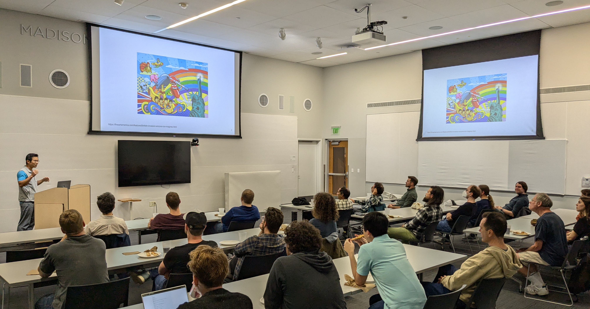

Slides from Terence's talk:
Get ready to dive into the exciting world where Rust meets Python! We'll focus on two quality-of-life tools: Ruff, a lightning-fast linter and formatter, and uv, an innovative package manager that's set to revolutionize Python dependency management. These Rust-powered tools are reshaping the Python development landscape. We'll examine their practical applications, from local development environments to deployment scenarios, including containerization strategies. Along the way, we'll uncover why Rust-based tools have become so valuable in the Python ecosystem, and showcase examples of direct language interoperability that significantly boost performance. By the end of the talk, I hope you'll gain some insight how these Rust-powered innovations are transforming Python development and what this means for the future of the ecosystem.
Terence Liu is a domain expert in building and deploying machine learning models, vector search engines, and distributed computing/data systems. Being an academically trained computational physicist, he is passionate about performance computing, and the fundamental hardware/language/software breakthroughs that accelerate its progress. Terence works at Clearview AI, a software vendor for public safety technologies.